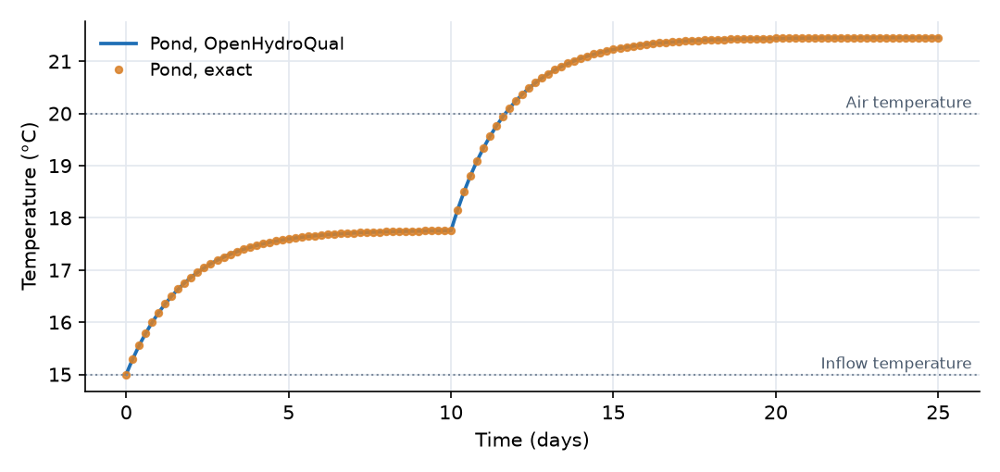
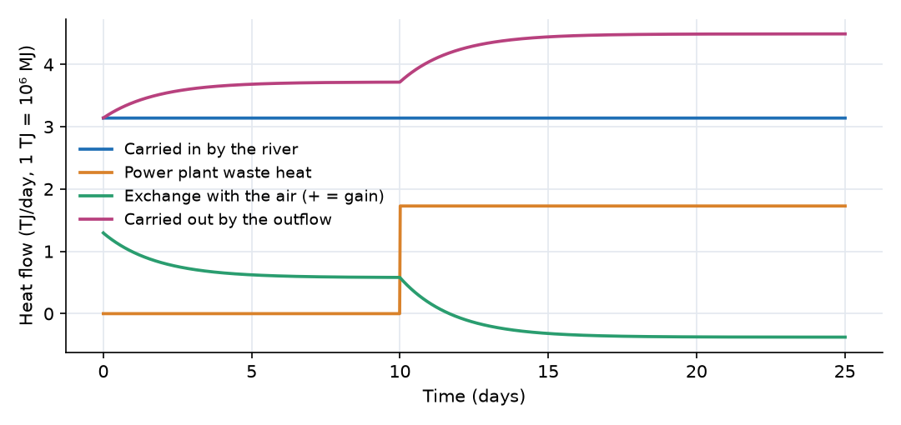

What this model represents
A power plant or industrial facility discharges its waste heat into a pond that a river flows through. The question is how much warmer the pond, and the water leaving it, becomes. That depends on three things: how much heat is added, how fast the flow carries heat away, and how much heat the pond exchanges with the air through its surface.
The pond is treated as completely mixed. Its temperature is carried by a Heat (temperature) constituent, which keeps an energy balance in place of a mass balance. The example runs 10 days without the plant, to show the natural temperature of the pond, then switches on a 20 MW discharge. With a constant air temperature the problem has an exact solution, so the example also verifies the heat transport, the heat input and the surface heat exchange in OpenHydroQual.
How it works
Water. The Pond is a Reactor block with a constant inflow Q = 50,000 m³/day. The Outflow link removes the same flow, so the volume stays at V = 200,000 m³ and the hydraulic residence time is V/Q = 4 days.
Heat content and temperature. For the Heat constituent, the state of each block is its heat content E = ρ·c_p·V·T (MJ), and the temperature it reports is
T = E / (ρ·c_p·V)
with ρ·c_p = 4.186 MJ/m³/°C (the constituent property volumetric_heat_capacity). Because ρ·c_p is constant, heat moves exactly like the mass of a dissolved substance, with ρ·c_p·T in the place of the concentration.
Heat flows into and out of the pond (MJ/day):
- carried in by the river: ρ·c_p·T_in·Q, with T_in = 15 °C (
inflow_loading) - added by the plant: 86.4·H, with H in kW from
plant_heat.csv(heat_input; 1 kW = 86.4 MJ/day) - exchanged with the air: 0.0864·K·A·(T_air − T), with K in W/m²/°C (
Air_exchange, reported asexternal_source; positive when the pond gains heat) - carried out by the outflow: ρ·c_p·Q·T (
Outflowlink, advective heat transfer of the upstream block)
so the energy balance of the pond is
ρ·c_p·V·dT/dt = ρ·c_p·Q·(T_in − T) + 86.4·H + 0.0864·K·A·(T_air − T)
Exact solution. Write a = ρ·c_p·Q = 209,300 MJ/day/°C (heat carried away by the flow per degree) and b = 0.0864·K·A = 259,200 MJ/day/°C (surface exchange per degree). For constant inputs the temperature relaxes exponentially toward
T_eq = (a·T_in + 86.4·H + b·T_air) / (a + b)
with the time constant
τ = ρ·c_p·V / (a + b) = 1.787 days
Without the plant, T_eq = 17.77 °C. With H = 20,000 kW, T_eq = 21.45 °C, a rise of 86.4·H / (a + b) = 3.69 °C. The file exact_temperature.csv tabulates the two exponential segments (starting from 15 °C at day 0 and from the computed day-10 temperature at day 10) every 0.2 days.
Time stepping. The run uses a fixed time step of 0.01 days (max_timestep_increase_factor = 1), small compared with τ.
What to look for in the results
- Agreement with theory. The computed temperature lies on the exact solution. The largest difference is about 0.004 °C, the time discretization error of the fully implicit (backward Euler) scheme, largest just after the heat is switched on.
- The natural temperature. Without the plant the pond does not stay at the 15 °C of the river. It settles at 17.77 °C, a weighted average of the inflow and air temperatures with weights a and b. The pond gains about 580,000 MJ/day from the air in this state.
- The surface matters. If the outflow were the only way out, the plant would warm the pond by 86.4·H / (ρ·c_p·Q) = 8.26 °C, the familiar ΔT = H/(ρ·c_p·Q) for a heated stream. The actual rise is 3.69 °C because the warmer pond also loses heat to the air: at the new steady state the surface exchange turns from a gain of 580,000 to a loss of about 377,000 MJ/day.
- Faster response than the residence time. The temperature responds with τ = 1.79 days, faster than the 4-day residence time, because surface exchange and outflow remove a temperature disturbance together (time constant ρ·c_p·V/(a + b), compared with V/Q for a dissolved tracer).
- Heat budget. At steady state the heat carried in by the river (3,139,500 MJ/day), plus the plant's 1,728,000 MJ/day, minus the 376,800 MJ/day lost to the air, equals the 4,490,300 MJ/day carried out by the outflow.
Assumptions and limitations
- The pond is completely mixed and does not stratify. Deep ponds and lakes that receive warm water often form a warm surface layer, which loses heat to the air faster than this model predicts.
- Surface heat exchange is linearized: one coefficient K lumps radiation, evaporation and convection, and T_air acts as the equilibrium temperature the water relaxes toward. Both are held constant here. The source also accepts a time series of air temperature (
time_variable_air_temperature) for daily or seasonal cycles. - ρ·c_p is constant, and the plant's discharge is represented as heat added directly to the pond water, without a separate cooling-water stream.
- Flow, volume and inflow temperature are constant.
Model diagram
Hover a block or link to see its name and type. Arrows show the positive flow direction.
Components
Click a component to see every property set in the model file, with units and meaning.
Blocks 2
Storage compartments: each holds water (and dissolved or particulate mass) and has a state that evolves in time.
PondReactor · mass_transferA well-mixed pond of 200,000 m³ with a 100,000 m² water surface (2 m deep). It receives 50,000 m³/day of river water at 15 °C, starts at 15 °C, and from day 10 receives the plant's waste heat through its time-variable heat input.
Reactor: Reactor
| Property | Value | Unit | Meaning |
|---|---|---|---|
| Initial Storage | 200000 | m3 | |
| Constant Inflow | 50000 | m3/day | |
| Bottom elevation | 0 | m | |
| Temperature: Temperature | 15 | degreeC | Water temperature, heat content/(rho*c_p*Storage). The value entered is the initial temperature of the block. |
| Temperature: Inflow temperature | 15 | degreeC | Temperature of the block's external inflow (constant inflow plus time-variable inflow). |
| Temperature: Time-variable heat input | plant_heat.csv | kW | Time series of heat input in kW, added to the constant heat input. |
| Temperature: External source | Air_exchange | MJ/day | A source whose rate is in MJ/day, e.g. a Surface heat exchange source. |
Downstreamfixed_headThe receiving river below the pond, a fixed-head boundary at 0 m that accepts the outflow. Its temperature is not part of the analysis.
fixed_head: Fixed-head boundary
| Property | Value | Unit | Meaning |
|---|---|---|---|
| Initial Storage | 100000 | m3 | |
| Head | 0 | m | |
| Temperature: Temperature | 15 | degreeC | Water temperature, heat content/(rho*c_p*Storage). The value entered is the initial temperature of the block. |
Links 1
Connections that move water (and the mass it carries) between blocks.
OutflowFixed flow · mass_transferFixed flow of 50,000 m³/day from Pond to Downstream, equal to the inflow, so the pond volume stays at 200,000 m³. It carries heat out at ρ·c_p·Q·T.
Fixed flow: Fixed flow
| Property | Value | Unit | Meaning |
|---|---|---|---|
| Flow rate | 50000 | m3/day |
Sources 1
External inputs or sinks applied to blocks: rainfall, evaporation, loads, exchange with the atmosphere.
Air_exchangesurface_heat_exchange · mass_transferSurface heat exchange source attached to the Pond. Heat moves between the water and the air at K·A·(T_air − T), with K = 30 W/m²/°C, A = 100,000 m² and T_air = 20 °C.
surface_heat_exchange: Heat exchange between the water and the air through the water surface, linearized: K*A*(T_air - T). Attach it as the External source of a Heat (temperature) constituent in a block. Positive when the air is warmer than the water. 1 W = 0.0864 MJ/day.
| Property | Value | Unit | Meaning |
|---|---|---|---|
| Water surface area | 100000 | m2 | Area of the water surface exposed to the air. |
| Surface heat exchange coefficient K | 30 | W/m2/degreeC | Linear heat exchange coefficient lumping radiation, evaporation and convection; typically 10-50 W/m^2/degC for lakes and rivers. |
| Air (equilibrium) temperature | 20 | degreeC | Air or equilibrium temperature the water relaxes toward. Added to the time-variable air temperature, so leave one of them 0. |
Constituents 1
Substances or particles carried by the water.
TemperatureHeat · mass_transferA Heat (temperature) constituent. Each block stores its heat content ρ·c_p·V·T (MJ) and reports the temperature T (°C). The volumetric heat capacity ρ·c_p is 4.186 MJ/m³/°C, the value for water.
Heat: Carries water temperature. The balanced quantity is the heat content rho*c_p*Storage*T (MJ) and the displayed concentration is the temperature T (degrees C); rho*c_p is held constant (volumetric_heat_capacity). Heat moves with flow like a dissolved constituent: advection rho*c_p*Q*T, plus optional conduction/dispersion. Inputs in a block: initial temperature, inflow temperature, and a heat input in kW (heater, waste heat; negative for cooling). For exchange with the air attach a Surface heat exchange source. Works in any block with Storage and inflow (Reactor) and any link with flow (Fixed flow).
| Property | Value | Unit | Meaning |
|---|---|---|---|
| Volumetric heat capacity (rho*c_p) | 4.186 | MJ/m3/degreeC | Density times specific heat of the water, held constant. 4.186 MJ/m^3/degC for water (1000 kg/m^3 x 4186 J/kg/degC). Converts temperature to heat content: heat content = rho*c_p*Storage*T. |
| Thermal diffusivity | 0 | m2/day | Thermal (or turbulent) diffusivity used for conduction through links that have an area and length. Molecular value for water is about 0.0123 m^2/day (1.43e-7 m^2/s). 0 (the default) turns conduction off; Fixed flow links have a negligible area, so there it has no effect. |
| Dispersivity | 0 | m | |
| Stoichiometric Constant (heat of reaction) | 0 | Heat released per unit of reaction, in MJ per unit of the reaction rate's mass (e.g. MJ/g). Leave 0 (the usual case): the temperature is then not changed by reactions. | |
| Temperature | 0 | degreeC | Water temperature, heat content/(rho*c_p*Storage). The value entered is the initial temperature of the block. |
| Inflow temperature | 0 | degreeC | Temperature of the block's external inflow (constant inflow plus time-variable inflow). |
| Heat input (power) | 0 | kW | Heat added directly to the water in kW: a heater, or a power plant's waste heat. Negative values remove heat (a chiller). 1 kW = 86.4 MJ/day. At steady state in a well-mixed tank it raises the outflow temperature by H/(rho*c_p*Q). |
Input files
plant_heat.csv | Waste heat discharged by the power plant into the pond. Column 1: time (day); column 2: heat input (kW). 0 kW until day 10, then 20,000 kW (20 MW). |
exact_temperature.csv |
Simulation settings
| Start time | 0 |
| End time | 25 |
| Initial time step | 0.01 |
| Write interval (steps) | 10 |
Results
Produced by running the downloaded model unchanged.

